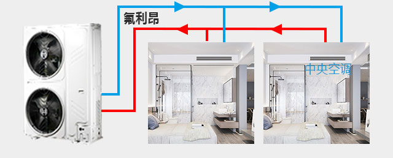
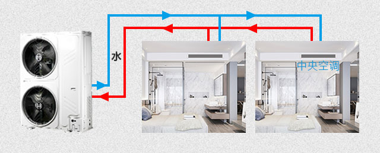
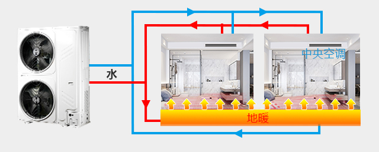
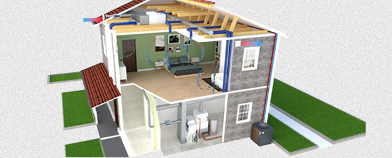
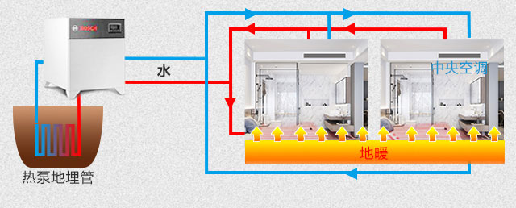
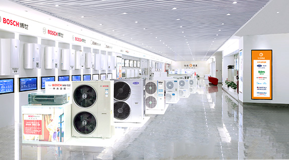
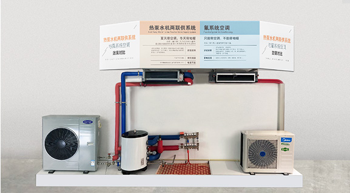
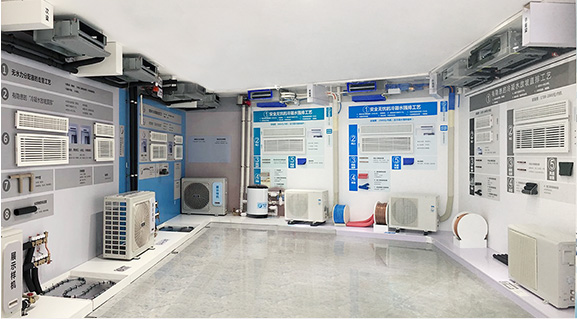

低端方案
氟系统中央空调

优点
造价成本较低
缺点
舒适性差
● 出风温度很低，冷风凛冽
● 温度波动很大，不舒适
● 过度除湿，空气干燥
不利于健康
● 易得空调病
● 冬天空调吹热风取暖，空气干燥
代表品牌所有日系、国产品牌 推荐指数 ★
舒适健康方案
水系统中央空调

优点
舒适度高
● 出风温度适宜，冷风柔和
● 温度恒定、舒适
● 除湿少，空气不干燥
健康
● 不会产生空调病
节能
● 比氟系统空调节能
● 冬天舒适度比氟空调好，比地暖差
代表品牌欧美品牌 推荐指数 ★★★
更舒适、更健康、更节能方案
水系统中央空调 + 地暖两联供

优点
夏天，水系统中央空调
● 舒适度高
● 更健康
● 比氟系统空调节能
冬天，地暖供暖
● 比空调取暖，更舒适、更健康
● 地暖使用成本比烧燃气供暖节省一半
代表品牌欧美品牌 推荐指数 ★★★★★
全球最舒适高端方案
全空气中央空调

优点
营造室内"三恒、五度、六无"的舒适健康空间。
三恒
恒温：温度恒定、恒湿：湿度宜人、恒氧：室内含氧量充足
五度
温度、湿度、新鲜度、气流度、洁净度
六无
微气流无风感、无设备噪音、室内洁净无尘、杀菌无病毒
无甲醛、无异味
代表品牌北美品牌 推荐指数 ★★★★★★
超级节能的冷热源主机
地源热泵

优点
夏天空调
●比氟机空调节能50～60%
●比空气源热泵水机节能40%
冬天供暖
●比空气源热泵供暖节能40%
●比燃气锅炉供暖节能75%
可用于：水系统中央空调、两联供、地板天花制冷、
全空气中央空调的冷热源主机。
代表品牌欧美品牌 推荐指数 ★★★★★★
囊括全球所有空调类别

代理众多知名中央空调品牌
- 囊括6大进口/国产品牌，6种不同类型的空调满足各种舒适/节能需求
1000+
平米体验展厅
- 中央空调全球所有类型的空调均有展示，可直观体验各种类型空调舒适度、节能性的区别
类型齐全 - 工艺展示各种工艺辅材展示对比，可直观对比不同安装工艺/辅材的好坏，正确的选择
对比清晰